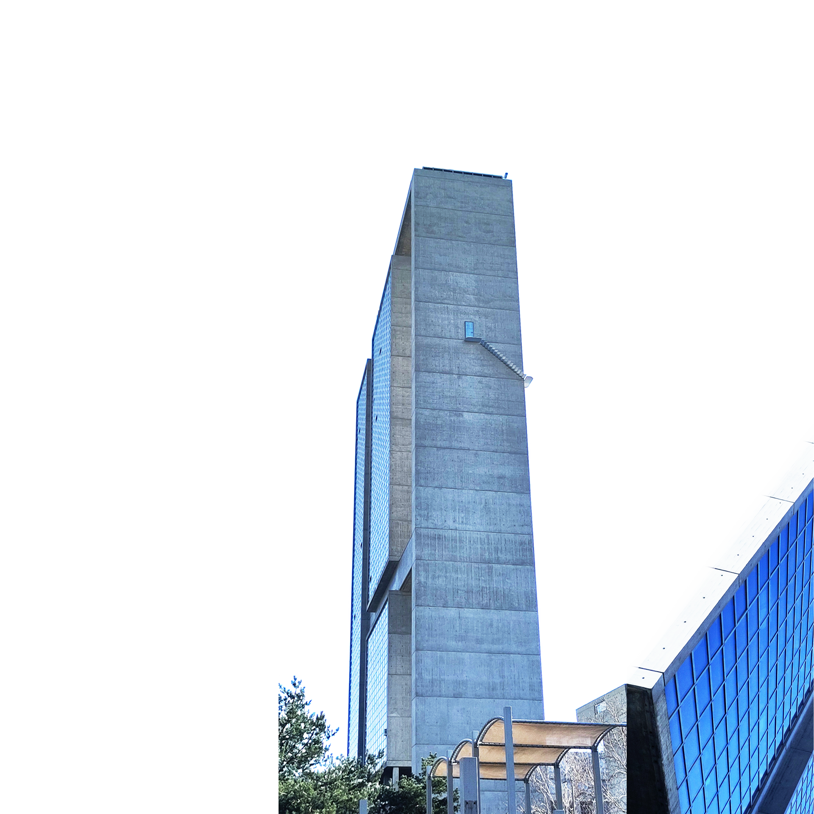
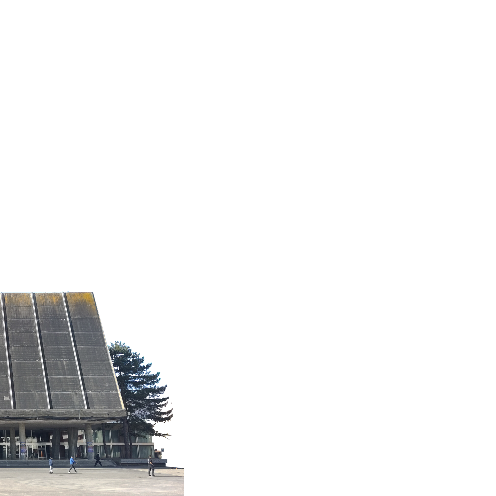
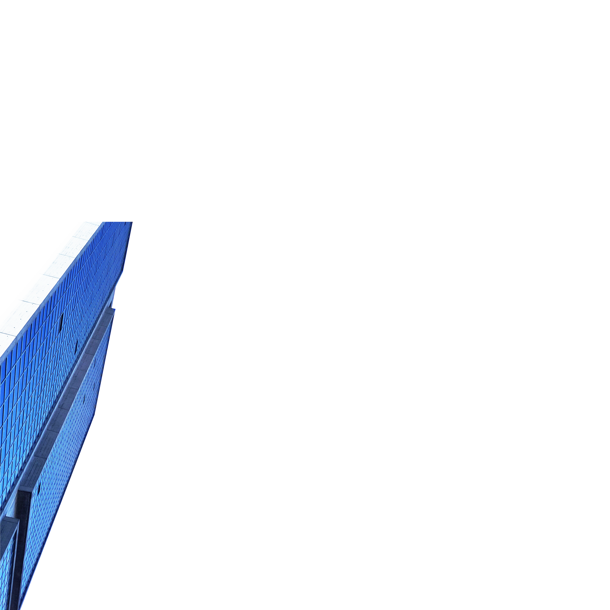

Durch den wirtschaftlichen und demografischen Wandel gewannen schweizweit brutalistische Bauten zeitgenössisch an Bedeutung.
Haus
Das von Max Schlup designte Kongresshaus in Biel/Bienne ist ein Wahrzeichen der Stadt und
steht führ den wirtschaft-
lichen Aufschwung
der Stadt im 20.
Jahrhundert.
1966
Kongress

Max Schlup besuchte in Biel die Grundschulen, lernte Hochbauzeichner und studierte von 1933 bis 1939 Architektur am Technikum in Biel. 1948 eröffnete er dort auch sein eigenes Architekturbüro und seine Bauten definiertennoch heute das Stadtbild Biels
und die Architekturgeschichte der Region.
-09.06.1917
† 11.02.2013
Max Schlup
Mit Betonung einer geometrischen Ordnung und die Vorliebe für zeitgemässe Materialien wie
Stahl und Glas.
In den 1960er- und 1970er-Jahren erlebte die Stadt eine Phase intensiver Modernisierung.